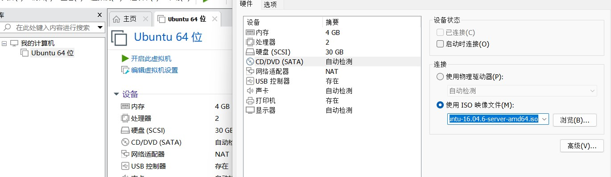
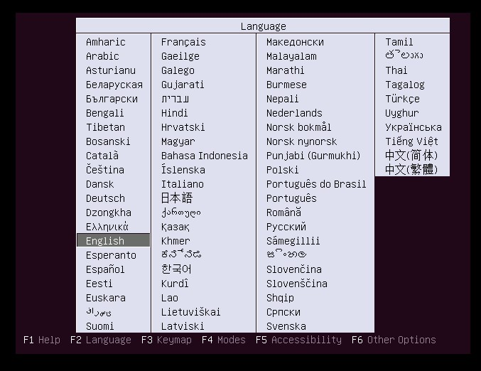
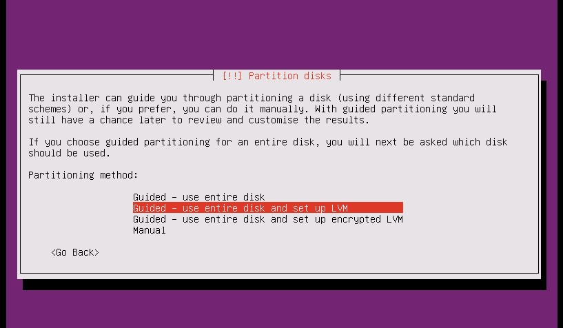
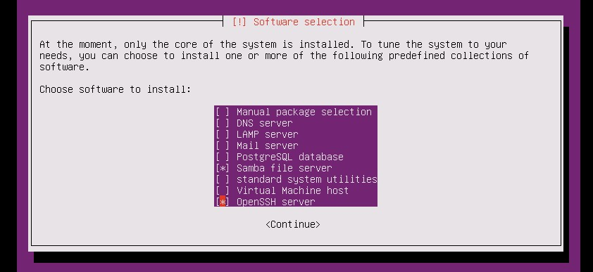
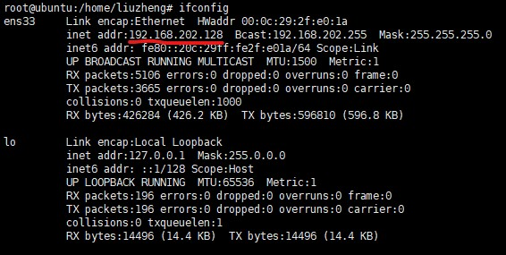
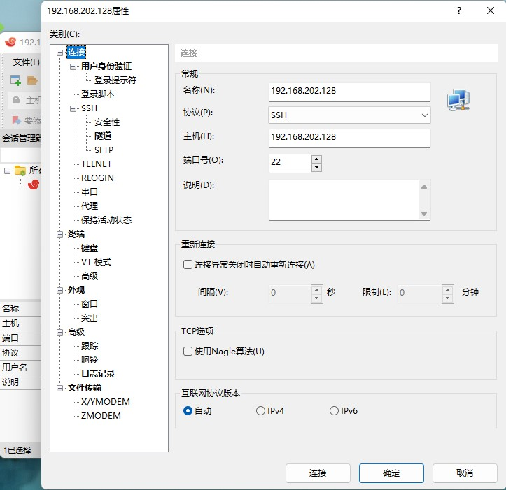
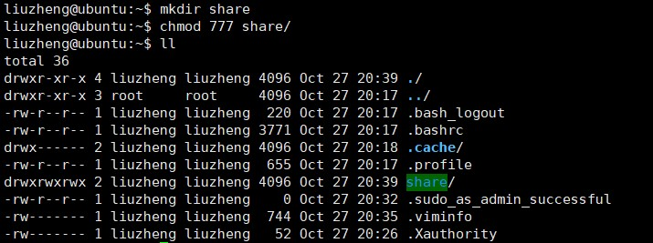
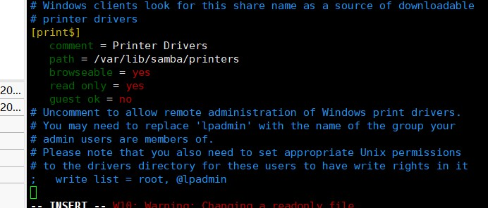
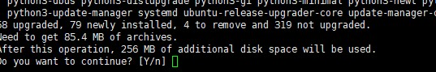

Linux下的C/C++开发配置
前言
从今天开始，我们开始学习如何在Linux下进行高性能的服务器开发，学习之前我们掌握基本的C/C++语法，配置好相关的环境，如果你觉得这些东西配置起来太过麻烦，没关系，博主会从头开始一步一步的配置，所以不必担心，旅途马上开始。
安装Linux系统
首先我们进行最为基本的一步，在Windows系统下安装Linux系统，
首先我们要安装一个VMware，这里附上安装密匙：ZF3R0-FHED2-M80TY-8QYGC-NPKYF。我们来看具体操作：
1.取出VMware，安装在我们的电脑上，如果你直接安装成功可以去看第二步了，如果你没安装成功，可能是需要开启CPU虚拟化，开启虚拟化首先要根据你的电脑型号上网查找按哪个键进入BIOS，然后重启电脑，在重启的过程中狂按那个键，待进入BIOS界面后进入BIOS后，找到Configuration，选择Intel Virtual Technology（或AMD Virtual Technology）按回车，将光标移至Enabled，然后再回车，最后按F10保存并退出。
2.安装好VMware后，激活，我们要将光盘映像文件下载下来，这里我们使用的是Ubuntu。
3.打开VMware，点击创建新的虚拟机，依次执行下列操作，选中典型、下一步、选中稍后安装操作系统、下一步、选中Linux、在版本的下拉菜单中选择Ubuntu、下一步、为你的Linux系统取一个心仪的名字、选择放在一个喜欢的位置、下一步、指定内存大小为30G、下一步。
4.点击关闭、完成，右键新建好的虚拟机，点击设置，点击CD/DVD，选择使用ISO映像文件，选中下载好的Ubuntu映像文件，点击确定。

5.开启创建好的虚拟机，选择语言推荐选择英文，选中安装Ubuntu，回车。

6.接下来的选择只要选择默认的即可。
7.之后会提示我们设置hostname，用户名，密码，我们只需要输入相应的即可。输入完成后会提示是否加密home文件我们选择no。
8.之后会询问我们的时区，我们选择yes，然后提示我们分区我们选择默认选项，然后在partition disks页面选择yes。

9.之后会提示我们配置http，这里我们直接跳过。
10.经过一段漫长的安装过程之后，我们选择不自动更新，然后我们安装我们需要的软件。一个是SSH，一个是Samba。

11.最后会提示我们安装grub boot，我们选yes。
安装Xshell
在公司里，linux服务器是开发小组共享的，正式上线的项目是运行在公网之上的，因此程序员需要远程登录到linux进行项目管理或开发，所以我们要知道如何远程登录linux。当然我们远程登录也需要工具，Xshell6戳我下载
安装好后，我们开始使用Xshell，首先我们如果想远程登录linux，就要先知道linux的IP地址，我们可以在linux中断中输入ifconfig来查看IP地址。

之后我们打开Xshell新建一个连接，名称可以随便取，但主机一定是我们刚才拿到的主机号

之后会有一个弹窗，我们选择接受并保存。这样我们就可以使用Xshell远程登录linux了。
配置Samba
我们刚才在安装Ubuntu的时候，我们已经安装好Samba了，接下来我们配置Samba。
1.我们在命令行中输入sudo passwd root，这个时候提示我们输入新的密码，这一步是设置管理员密码，然后我们输入su进入管理员模式。
2.之后我们输入mkdir share，创建一个share文件夹，输入chmod 777 share更改文件夹的权限。

3.输入vim /etc/samba/smb.config，进入smg.config文件，将光标移动到最后，在文件末尾按i，开始修改文件。

4.我们在文件末尾加上：
1 | [share] |
按esc退出编辑模式，输入:wq退出。
5.在管理员模式下（如果不是输入su进入），输入smbpasswd -a 你的用户名，输入密码并确认密码。
6.在Windows下打开此电脑，在地址栏输入\\ip地址，之后会提示输入Samba的账号和密码，正常输入，之后我们就可以看到我们在linux下建立的分享文件了。
7.我们右键文件，选择映射网络驱动器（Map network drive），之后我们确认，这样Samba的配置就完成了。
gcc安装
linux环境的最后一步，安装GCC，众所周知啊，国外的东西下载的都比较慢，所以我们这里提供一个更改下载源的方法，如果不嫌弃慢的同学可以直接向下寻找安装GCC的方法。更改下载源的方法是（注意一下操作均需管理员身份）：
1.在更改下载源之前，我们最好要备份一下原本的下载源以备不时之需，备份下载源的指令是cp /etc/apt/sources.list /etc/apt/sources.list.old。
2.备份好下载源后，我们输入vim /etc/apt/sources.list，将其中的内容替换为：
1 | deb http://mirrors.aliyun.com/ubuntu/ focal main restricted universe multiverse |
我们可以在非insert模式（insert模式会在左下角标注）下按键盘的d键两次（小写模式下），快速删除一行，右键命令行进行粘贴。这样我们的下载源就更改完了，接下来我们开始安装gcc：
1.我们在管理员模式下输入apt-get update
2.待更新完毕后，输入apt-get install build-essential，之后会提示我们是否继续我们输入y

3.之后可能还会有一个安装选择，我们选yes即可
这样gcc也安装完毕了，我们可以在命令行中输入gcc -v，查看是否安装成功，如果安装成功就会出现gcc版本信息。
vscode安装及配置
现在我们已经安装好了Linux环境，那我们还需要一个写代码的地方，这里我们选择vscode作为编辑器。具体安装方式及配置如下：
1.我们安装好vscode，然后安装，安装的过程很简单，这里不展开说明。（附上安装包：戳我下载）
2.接下来我们开始配置vscode，因为我们的代码多半都是放到Linux跑的，所以我们对vscode的设置没有那么复杂，我们只需要下载几个方便我们写代码的插件即可，这里推荐的是C/C++ Extension Pack，Tabnine AI。
 wechat
wechat alipay
alipay